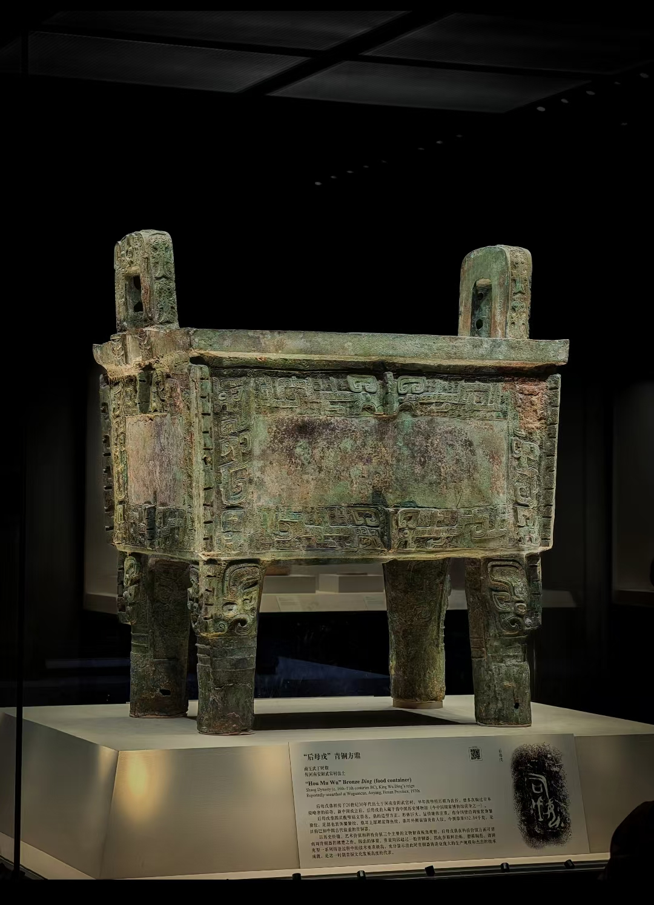

方向一
每日故宫式仪式感
RITUAL — PEER TO 每日故宫
参考的是手法而非皮肤：镂空大字透出纹样肌理、掀日历式的开卡动作、节气封面式的"今日一纹"。
黑金配色本来就是对的——每日故宫拿过豌豆荚设计奖的这套语言，恰好验证我们的底色。以下两个演示都可以直接点。
参考：每日故宫（故宫博物院 × Pea Pod Design Award 2015 年度设计）
识 纹 第 一 步
拍
拍 照 识 纹
逛博物馆时拍一张
立刻认出它、听它说话
A1 · 首页第一卡：巨字镂空透云纹
九 月
13
星 期 日 · 白 露 二 候
轻 触 掀 开
稀 有 · SSR
饕餮纹
商 · 约公元前1600–1046年
已 收 入 图 鉴
A2 · 每日一纹：掀日历 → 点击试试
方向二
Awwwards 编辑排版
EDITORIAL — 图鉴 / 系列
文化类站点拿 Awwwards 的公式：一张大图 + 一个超大衬线标题 + 编号 + 足量留白。
搬到图鉴=每期一个系列，像杂志目录一样逐条陈列，纹样自己当主角。工具感退后，杂志感上前。
参考：Awwwards 文化/遗产类获奖站共性（大图叙事 + 超大衬线标题 + 编号体例）
纹 脉 图 鉴 · 第 壹 卷
青 铜 纪
The Bronze Age — Pattern Catalogue Vol.1
No.01
饕餮纹
商有首无身沟通人神
商代青铜器上最具威慑力的主题纹饰。双目圆瞪，阔口獠牙，两侧对称展开躯干与利爪——在殷墟重器最醒目的位置上，它是王权与神权共同的凝视。
展 开 全 文 →
No.02
凤鸟纹
商 周翎羽回卷祥瑞之始
长冠垂尾，翎羽回卷成流动的曲线。凤鸟自商代起便栖在青铜的肩颈之上，此后三千年，一直是这片土地上最持久的吉祥物。
展 开 全 文 →
No.03
云雷纹
商 周回旋连续地纹之王
方折为雷，圆转为云。作为衬地的它以细密回旋铺满器身，托起主纹的威严——所有伟大主角身后，都站着这样一片沉默的背景。
展 开 全 文 →
B · 图鉴系列页：杂志式条目（No.01/02/03 · 大图 · 超大标题 · 留白）
方向三
纹样叙事详情页
NARRATIVE — PatternDetail 重构
现在的详情页是字段罗列（朝代/历史/寓意/用途/趣闻五段贴标签）。改成长滚动叙事：
文物照片全屏开场 → 竖排大题 → 首字下沉讲来历 → 寓意做成居中金句 → 趣闻做成"掌故"小卡 → 收在"接续这条纹脉"。
以下用真实数据渲染（商代饕餮纹 · 后母戊鼎原型 · 现有文案一字未改）。
参考：香港故宫文化博物馆「纹」以载道 — 纹样作为叙事主体

饕餮纹
原型 · 后母戊鼎 商代
饕餮纹
商代 · 约公元前1600–1046年 · SSR
青 铜 纪
正 面 兽 面 · 双 目 圆 瞪
壹 · 来 历
沟通人神的凝视
饕餮纹是商代青铜器上最具威慑力的主题纹饰，以正面兽面为核心，双目圆瞪，阔口獠牙，两侧对称展开躯干与利爪。商代社会笼罩在浓厚的鬼神崇拜之中，饕餮纹被认为是沟通人神、震慑妖邪的视觉符号。在殷墟出土的司母戊鼎等重器上，饕餮纹占据了器物最醒目的位置。
贰 · 寓 意
狰狞之下的敬畏
饕餮纹象征着王权的至高无上与神权的不可僭越，其狰狞的面容是对天地神灵敬畏之心的视觉表达。它也是中华文明"礼"文化的早期物质载体。
叁 · 所 在
铸在重器最醒目处
铸刻于商代青铜礼器的腹部、把手、足部等最突出的位置，尤以鼎、簋、觥、斝等重器最为常见。
掌 故
《吕氏春秋》记载饕餮"有首无身，食人未咽"，但现代考古发现商代早期的饕餮纹其实是有完整身体的。
这道纹样，是某个商代工匠的呼吸
A craftsman's breath, three thousand years ago
C · 详情页：全屏文物开场 → 竖排题 → 首字下沉 → 金句 → 掌故 → CTA